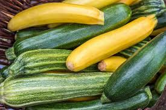

The zucchini, also known as courgette, is a summer squash that first appeared in Mesoamerica. They belong to the Curcurbita pepo species and also have other names, such as marrow in Britain and baby marrow in South Africa. They can reach up to forty inches length wise, but are usually harvested when they're still unripe, at about six to ten inches. Zucchinis are usually either dark or light green. However, there's also a hybrid known as golden zucchinis that are typically a deep yellow or orange shade.

History
The zucchini, like all other squashes, originated from Mesoamerica. Its original name was ayokonetl, which came from the Mexican language known as Nahuatl. The standard variety of green, cylandrical zucchinis were first cultivated in northern Italy in the second half of the nineteenth century. The name zucchini was derived from the Italian word zucca, meaning pumpkin or squash. Recordings of zucchinis in the United States first appeared in the early 1920s. It was most likely that an Italian immigrant had brought over zucchini crops from Italy and begun planting them in the U.S.
Different Recipes for Zucchinis
Zucchinis are usually picked when still under eight inches, seeds still soft, and the zucchini still immature. They're traditionally served cooked and can be prepared in a variety of different cooking techniques, such as steamed, boiled, grilled, stuffed then baked, barbequed, fried, or incorporated in other dishes, often bread or cake. In different countries, zucchini is served differently. In France, it is a key ingredient in a dish called ratatouille, a stew of a variety of summer fruits and vegetables prepared in olive oil and cooked in low heat for a long period of time. A popular dish served in Russia, Ukraine, and other countries, known as zucchini caviar, is a spread made from thermically processed zucchini, tomato paste, onions, and carrots. Another favorite dish found in a plethora of cuisines is stuffed zucchini, made of rice, onions, tomatoes, and occasionally meat.